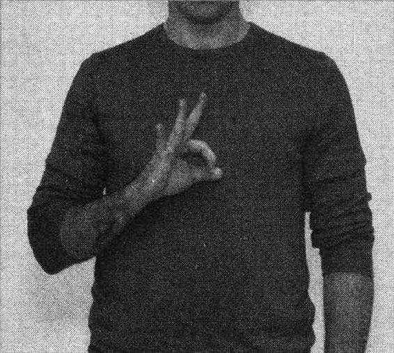
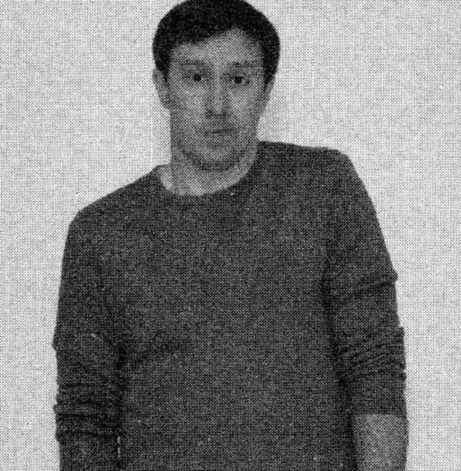
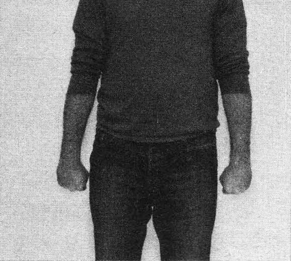
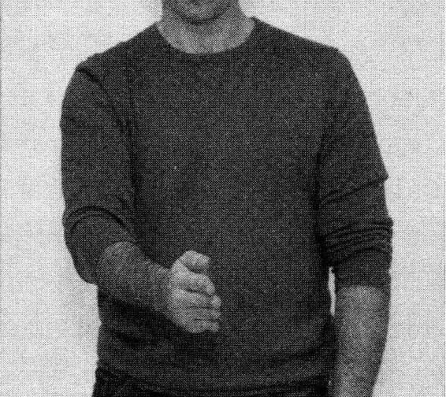
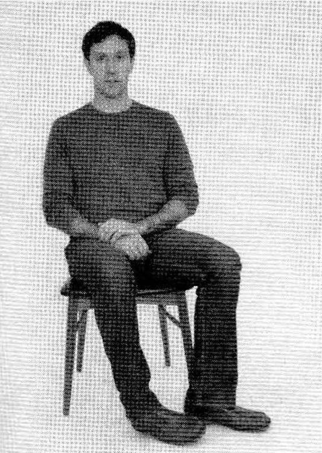
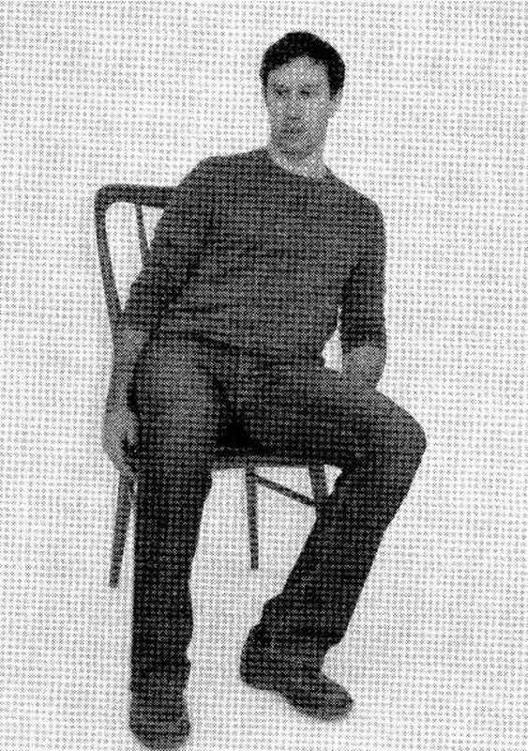

第四章 观察身体
耳聋，使我清楚地看到了语言的不真实性，以及身体无法掩饰的表情。
——诗人、演员 特丽·加洛韦（Terry Galloway）
还记得第一章提到的那位风险投资家斯蒂夫·马克斯吗？就是那位前去旧金山参观电脑动画制作公司，并打算进行投资的人。通过参观以及与首席执行官的交谈，马克斯很满意，并没有察觉出任何破绽。在他从办公室出来的路上，他停下来与一位正在工作隔间打字的年轻女员工进行了交谈。交谈中他所听到与看到的，使他又回到了首席执行官办公室对其进行质问。
这位首席执行官崩溃了，并且承认：隔间里的所有员工都是他雇来的演员，他的员工都被辞退了，因为他的公司已经接近破产了。
是什么泄了密呢？马克斯又是如何得知那里的员工全是假的呢？
并不是女“员工”的话语中露出破绽。马克斯觉得女“员工”对他问候的回应有些心不在焉。对于几分钟前还很全神贯注工作的人来说，这种不热心有些奇怪。之后她的回答使他消除了疑虑，可能她对出现在自己工作间的陌生人比较警惕。
马克斯是从她的行为中发现破绽的。在几分钟的交谈中，他发现了三个迹象表明这位女“员工”可能是在骗他。
第一个线索是，他注意到女“员工”的手。当这位女“员工”抬头跟他打招呼时，她把手从键盘上拿了下来放到了桌子上。马克斯觉得，当他跟女“员工”打招呼时，正在工作的她应该还把手放在键盘上，甚至有可能有点不高兴，因为他打扰了她的工作。
识别谎言小贴士
寻找能够表明说谎的一连串行为。一个姿势或一次口误说明不了什么，如果观察到多个指示说谎的动作，你就要警觉了。
第二个线索是，当这位女“员工”跟他说话时，她干脆就靠在椅子上，身体转向隔间入口处了。当被问及一个不具有威胁性的问题时，一般人的反应会是身体微微向桌子前倾或斜靠在椅子扶手上，但是这位女“员工”的身体语言表明，她想要马上离开这里。
第三个线索是，当这位女“员工”说话时，她往里挪了一下她的钱包。这是为什么呢？她并没有打算离开那里，马克斯也没有往她钱包的方向移动呀。马克斯知道，当人们紧张的时候，通常会制造出他们能够随手摸到的“障碍物”，比如钱包、背包甚至椅子、桌子。人们会将这些“障碍物”放在自己与假想的威胁之间。这就是专业的审讯者在审讯骗子时，中间空无一物的原因。当骗子觉得自己暴露的时候，他便无法将精力集中在编造谎言上了。有时，审讯者中途会离开房间几次，每次回来时都会把椅子往被审者方向拉近一点儿。这就破坏了被审者的个人空间感。被审者会觉得自己变得越来越容易被识破，但他也不知原因。这种身体上的接近使被审者变得越来越紧张。最后，被审者认为审讯者已经全都知道了，于是坦白交代了。
马克斯曾经在互联网泡沫时期吃过亏。那时，他投资了一家虚报商业业绩的公司而损失了一大笔钱。于是他便武装自己，以对付那些夸张的、赤裸裸的谎言。他训练了如何识别谎言，知道了人类之间有65%的非语言交流是通过身体语言来完成的。也正是那个女人的身体语言（尤其是她的姿势）使马克斯发觉她正在说谎。当马克斯走近那位女“员工”时，他当然对她的言语感兴趣，但是他知道这个女人的身体语言能够告诉他更多他想要知道的事情。
鼻子也能交流
如果人类交流的80%是非语言的，其中有65%是通过身体语言进行的，那么另外的15%是通过什么方式进行的呢？通过体味、外激素和其他荷尔蒙以及化学信号。
人类的世界语言
早在几世纪以前，人们就认识到了身体语言在交流中的象征力量。公元前14世纪富裕的希腊人就认为一个人走路时如果挺直腰板，很悠闲地迈着大步，就表示他们不同于奴隶或者工人，不需要做任何工作。同样，在古罗马，一群士兵行进时会努力地保持姿势且面容镇定，给人以有很强自控力的感觉。
1644年，英国内科医生约翰·布尔沃（John Bulwer）出版了一本名为《手势研究》（Chirologia）的书。他在书中写道：“人类的手会说各种语言，它具有思维通用性的一面，即使国籍不同、语言不通也能够明白手势。作为人类唯一的、来自自然的语言，手势也可被称为人类的通用语言；只要是在人类能够居住的地方，手势是最容易理解的了。”
莎士比亚的戏剧《特洛伊罗斯与克瑞西达》中，尤里西斯宣称：“她的眼睛里、脸上、嘴唇边都有话，连她的脚都会讲话；她身上的每一处骨节，每一个动作，都透露出风情的内心。”
识别谎言小贴士
当一个人点头或摇头时与他所说的内容不符时，你就要注意了。一个客户说：“我觉得你的提议非常棒”，这时他在摇头。这说明他心里对于你的提议是怀有异议的。
达尔文在《人和动物的表情》一书中，不仅全面研究了人类的面部表情，也提到了人类与动物的动作。他在书中写道：“我们的意图和动作彼此非常紧密地联合在一起。”
如果我们急切地想要把一件东西向一个方向移动，那么这时候我们就很难阻止自己的身体也向这个方向移动……如果有一个大人或者孩子在发怒时候对另外一个人大声说话，要他离开，那么这个大人或小孩通常会挥动自己的手臂，好像要把那个人推走似的；虽然那个冒犯他的人并不站在他的身旁，而且他也不用做出这种动作表明说话的意义，但是他仍旧会这样做。另外，如果我们急切地想要一个人走进自己身边的时候，那么我们就会做出一种动作，好像要把那个人拉近过来；还有无数其他的例子也是这样的。
现在，可以毫不夸张地说大部分美国人都已经熟知了身体语言所表达出来的信息。不停地晃腿、提肩、用拳头砸桌子——毫无疑问，这些都是人类情绪很明显的提示。然而，我们通常意识不到，我们的身体有时会泄露与话语不符的信息。对于一个接受过识别谎言训练的人来说，这些下意识的“暴露”姿势会提供大量宝贵的信息。
为什么行动胜过言语
对于识别谎言来说，非言语行为比言语行为更值得信赖的原因有两个。
第一个原因就是：骗子通常会排练他的谎言，而不是动作。他们认为，人们对于自己语言的负责程度胜于对身体语言或面部表情，于是便将注意力集中在编故事上。也许他们还会练习一下所预期的反应。当一个人透露给媒体消息后会附加一个反应——“《新闻报》上有个企业并购的消息？谁透露的？——他会表现得很诧异、震惊或者愤怒。但是如果继续交谈，那说谎者就该慌了。这时，他的手应该放在哪儿？他是应该坐着还是站着？他可能都没想过这个问题，他只顾确认他所说的话，而忽视了其实他的腿正紧张地晃着，或者正在地板上扭动他的脚趾头呢。
有时，为了确保身体不会泄露自己，有些人会在说谎时尽可能不动。这就引出了非言语行为比言语行为更能泄露谎言的第二个原因：很不自然地保持不动。想要保持身体不动而看起来不奇怪是很困难的。大多数人，都会通过移动身体来强调他们所说的话——讲到重要的地方时身体向前倾，讲得激动时就踮起脚掌，讲话的时候手舞足蹈。但是，大多数时候骗子都将自己的注意力集中在编故事上，而忽视身体语言了。
说谎者在撒谎时通常会保持上半身不动，他们以为这样，谎言就不会被发现了。连5岁的小孩子说谎时，都尽可能地保持身体不动。
识别谎言小贴士
相信你的直觉。如果你觉得你和他人的交谈变得奇怪了，可能是由于对方停止使用手势或者上半身不动——这些不自然的动作，预示着欺骗。
这些都是斯蒂夫·马克斯走进那个冒牌员工时发现的。那位年轻女士一发现有人看着她时——这时她应该正在编造谎言——她的手就停止工作并且上半身一动不动。当猎物发现老鹰在头顶盘旋时，它会待在原地一动不动。于是这位演员的本能，告诉她要保持静止。
发现漏洞
当审讯者和其他谎言识别者观察一个人的肢体语言时，他们会寻找“情感漏洞”，也就是经常在脸上看到的下意识的表情。大多数时候，我们都能意识到我们的面部表情并试图控制它。一个人可能意识到自己说谎时会紧张，因此她就尽量不表现出焦虑并试图看起来很轻松。
对于那些说谎者来说，问题是人们大多预计不了自己的感觉，它总是给我们惊喜。尤其是在毫无准备的情况下，被问到或者被告知某些事情时，更加预计不到。还记得那个假装不知道是谁泄露给媒体消息的那个人吗？他很可能正期待对方的质问并且已经准备好应对的方法。尖锐的或者探查性的问题并不能难倒他，但是如果他突然意识到没人怀疑他，他该怎么办？这可不是他曾经“排练”过的场景啊，他可能都还没准备好去隐藏全身放松下来的抖动。如果一个谎言识别者发现了他放松身体的一抖，那么谎言识别者就有机会去发现真相。
三大方法
情感漏洞可以通过三个不同类型的肢体动作找到：
·符号法
·图示法
·镜像法
不像面部表情可以学会解读，这三个方法不会告诉你人们的感受是什么。但是这三个动作存在与否以及以什么方式运动，可以揭示你面对的人是否在说谎。
符号法
竖起中指和食指时形成的符号代表着胜利“V”字形；一辆车突然从路中间冲出来时，你向司机竖起的那根手指；你想让对方大点声时举到耳边的手，这些是象征符号。
象征符号就是独立于语言的有含义的信号。这些符号都是人为发出的并且具有特定性，因此完全可以取代词汇。事实上，当说话不方便的时候，手势符号是很有用的，比如两个人都在水下或者外界环境太吵根本听不到对方说话的时候。在美国，有大约60种的常用手势语。在特定情况下，一个眨眼的动作可能表示“我在开玩笑”。一个握紧摇摆的拳头表示：“我要揍你”！点头：“是的”；摇头：“不是”。如果看见路边有一个人伸出大拇指，我们都知道他是想搭车。
真实的表情通常是对称的，而虚假的表情是不对称的。符号语也是一样的。当说谎者使用符号语时，可能比划得不完全或表现得很笨拙。双肩对称地耸起意味“我不知道”。如果只耸起一只肩膀，那么有可能这个人在说谎；如果双肩只是微微耸起，手臂没动或者只是翻转了下手掌，那么这个人也可能是在说谎。
如果一个人的符号语和语境不符合，有可能这个人是在抑制自己的情感。比如，一个雇员一边说不难过，一边晃着“okay”的手势，那她很有可能是没说实话，当时她可能很生气或者很紧张。
注意符号法的文化差异
与面部表情不同的是，符号法存在着文化差异。在美国，用拇指和食指组成个圆表示“okay”，但是在巴西或者意大利，这一手势是不礼貌的行为：这是对男性的侮辱。同样的，在美国“V”的手势表示胜利，但是在英国，如果做这一手势时掌心向内，那么就具有侮辱性了。

“okay”是美国人经常做的一个很普通的动作，但在某些文化中是不礼貌的。

双肩对称耸起意味“我不知道”。只耸起一直肩膀，意味着这个人在说谎。

在正常的语境外，握拳意味着非常愤怒。
图示法
图示法是与语言直接相连的手势语，被用来强调说话重点、重复语义（比如你一边摸着肚子一边说饿）或增强语义的。与符号语不同，图示语不能替代话语。我们通过图示来强调我们的语言而不是取代语言。没有语言，图示就没有任何含义。如果一个人不说任何话只用手指在空中划了一条线，你可能会很困惑。但如果你问路时，这个人一边对你说沿着这条路一直走到头，一边在半空中划出了一条直线，这个时候他的手势才有含义，你也可以明白含义。如果你正在描述公司突然进行大裁员时，那么你可以用手像一把斧子在空中做一个劈砍的动作。如果试图向一位8岁的男孩表达，上次见他时还很小的意思时，你可以将双掌分开少许。
一个试图说谎的人会减少使用图示语和符号语。一个人努力思考自己要说什么时会将注意力集中在编造和维持自己谎言中。对于自己所说的内容，他并不会带有任何的情感，除非说到自己真实的意图。图示法源于语言背后的情感。如果没有了情感，图示法式的手势语就不复存在。

在空中做一个劈砍的动作，是强调讲话内容的典型姿势。
镜像法
镜像法是一种表明双方之间关系融洽的方法。
当一个人感觉跟你在一起很舒服，常常就会模仿你的肢体语言。这种肢体暗示是为了让你知道他正全神贯注地跟你交谈。当你向前倾时，他也会向前倾，或是会像你一样转换自己在座位上角度。所有这些动作都是对你的直接反映，目的是鼓励你继续交谈。在交谈过程中，对于那些相互感觉舒服的人，他们的说话方式、音调甚至连呼吸都几乎相同的。
因为有意识地使用镜像法是相对较为容易的，所以许多关于约会的书籍和专注于人际关系的网站，建议人们利用镜像法去模仿其伴侣的动作。一个网站提醒读者不要一开始就马上模仿别人。“否则，对方会认为你在取笑他，模仿的行为通常在10～20秒之后进行，动作一定要自然。模仿的另外一个目的是让别人知道你接受并尊重他们的观点，这样他/她也会潜意识地把你看做是一个乐意接受别人意见的人。”
通过对说谎者的行为进行分析，我们还是能够识别出谎言的。如果有人感觉不自在或者不愿与你交流时，他可能会做出一些与你相反的姿势。你若向前靠近，他可能会向后退；你若紧紧注视着他，他可能会把目光移开或者将双手放在脸上，或者将身体转向出口。此时，即便他在回答你的问题，他的身体却不断恳求你离开。在这种情况下，他很可能在欺骗你。
识别谎言小贴士
当怀疑别人可能在欺骗你时，务必让自己看清他的脸、身体和腿。这会有助于你识别表里不一的行为。
当一个人在欺骗你的时候，请注意一个更加明显的迹象：他不再使用任何姿势暗示了吗？他的姿势暗示是不是跟当时的情景不一致，显得很笨拙呢？现在，说谎者非常了解肢体语言能够暴露他的真实情感。因此，他会极尽所能地控制自己的行为。然而，这种行为本身就是一个线索。一个人如果模仿动作不自然，同时也克制自己不使用符号语或图示语，那么他会显得生硬或不自然。此时，即便你没有试图寻找别人欺骗自己的迹象，你也能意识到你们的谈话有所缺失。面对着这种奇怪而又笨拙的行为，我们肯定会感到不舒服和尴尬。而这就是出现问题的最先征兆。
寻找说谎的迹象
不舒服和失去耐心的典型迹象有，坐立不安、指尖做敲鼓式动作、脚趾颤抖。尽管有资料证明这些迹象是表明一个人在撒谎的可靠信号，但是每个人都会有心烦意乱的时候，由于紧张腿部出现的一点儿颤抖并不一定意味着事情可疑。这就是说，你应该注意一连串的可疑行为，这些行为让你得知对方隐藏了自己真实的情感。
比如说一个人的面部表情和肢体语言都使你认为他企图愚弄你。但此时是你指责并揍他一顿的时候吗？当然不是。作为谎言拆穿者，你的首要工作不是发现谎言，而是收集信息以便决定下一步的行动。
身体上的证据
朋友或陌生人的手势和动作，都能让我们得知他们的想法、情感、意图。我们同伴的握手的方式、手臂的摆放、腿部的动作、姿势，以及所在的位置，所有这些表现出来的信息都比同伴们意识到表现的信息要多得多。当然我们的非语言行为也是一样。
以下八个肢体语言暗示需要我们注意和理解。
1.张开手掌：张开或向上翻的手掌姿势表示欢迎和没有威胁性，意味着真诚和接纳。相反，手掌紧握暗示有所隐藏；手掌向下意味权威。
2.点头：美国人称这个姿势为“是的”姿势。当你说话的过程中看到这个姿势时，它表示“是的，我在听”，而并不一定表示“是的，我同意”。
3.塔尖式手势语：这种常见的非语言的手势语表达一种自信和优越感。做的时候将十指轻轻相碰形成塔尖状。这种手势语既可以表示褒义也可以表示贬义。只有结合手势之前的行为，我们才能确定其真实含义。
4.手掌向下的握手方式：位高权重的人喜欢用手掌朝下的方式与人握手，表示出对方身份地位不及自己。
5.双臂交叉：与手掌张开相反，双臂交叉的姿势（无论坐着还是站立）表示一种防卫的、消极的或不欢迎的态度。想让双臂交叉的人放下双臂，只需让他帮你拿东西或干点活。
6.双腿在脚踝处交叉：从双臂交叉的肢体暗示中，我们可以知道这种双腿在脚踝处交叉、相互勾住双腿的交叉式肢体语言，暗示一种退缩、不确定、害怕的心理，常见于牙科诊所和审讯室。
7.双腿分开的姿势：这种西部牛仔式和赛前专业运动员式的姿势常见于男性，强调了双腿分叉的区域，暗示一种统治地位和强硬态度。
8.扯棉绒：如果一个人转过脸去扯衣服上的棉绒（有时是真的，有时只是做动作），这暗示她并不赞同她的所见所闻，心里可能有不同的想法。
例如，你把一名称为萨德的员工请进办公室，和他讨论一些报告。当问起报告中的一些数据时，你注意到萨德将身体倚在门口，脚在不停地颤抖。萨德是因为在你办公室感到紧张，还是因为害怕你很快就要发现报告里一些他不愿让你知道的事情？
现在还无法判断。你可以尽量让萨德放松。比如开玩笑，递给他一块薄荷糖，设法让他放松（在这种情况下，你最好表现出对萨德的尊重和欢迎。如果萨德没有说谎，这将非常有用）。直接的质问只会导致拒不承认。如果没有充分把握，任何情况下都不要触犯他。因此，切忌当面对质，注意观察他的肢体语言的变化。

一个人双脚面向门的方向，意味着他想到离开。

无论坐着还是站着，向远离某人的方向倾斜，意味着他不舒服。
如果萨德的肢体语言没有明显变化，观察他的脸部表情，注意他的手势语。你说话时要慎重，选择问一些较为宽泛的、没有威胁性的、可以自由回答的问题。尽量少说话，同时将眼睛睁大是识别谎言的重要技巧。
尽管学会识别肢体语言所暴露出来的微小细节很重要，但是你还需学会分析对方的语言。这是下一章要学习的内容。